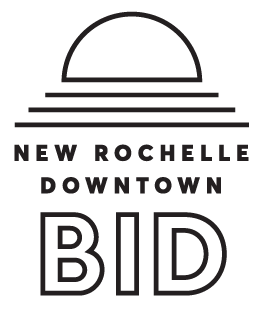

Thursday, March 15th 2018
IDEA New Rochelle Announces 2018 Inaugural IDEALab Fellowship Cohort
With the launch of the IDEALab, our first IDEALab Fellowship Cohort will have access to VR, Motion Capture, Digital Printing and other technology equipment to support their creative practice and launch public programming for New Rochelle citizens.
New Rochelle, NY — IDEA New Rochelle and their partner, the New Rochelle Business Improvement District, announced the selection of the competitively-chosen Cohort who will comprise the 2018 inaugural IDEA New Rochelle Fellowship and the launch of their IDEALab facilities. The IDEA New Rochelle Fellowship is a 3-6 month program which invites our cohort to pursue projects with immersive media and creative technology. The program supports projects that deal with the future of smart cities, sustainability, creative practice, VR/MR/AR and technological research.
Amelia Winger-Bearskin, director of IDEA New Rochelle, stated: "The launch of our IDEALab Fellowship offers an opportunity to begin seeing the possibilities of creative technology projects in New Rochelle. I am excited about collaborations between IDEA cohort and our New Rochelle community."
New Rochelle Mayor Noam Bramson noted, "New Rochelle has the opportunity to be at the forefront of art, technology and information services. The launch of IDEA's IDEALab Fellowship will jumpstart the impact of creative technology throughout downtown New Rochelle and offer new and exciting opportunities for citizens to engage with immersive technology."
The IDEALab facility, where the Fellowship will be based, is a three bedroom live-work loft with a fully-equipped research facility that will be outfitted with cutting-edge technology, allowing IDEA's cohort of creative leaders to advance their projects and host public programming. The facility was provided by the City of New Rochelle to advance the development of a vibrant new Arts and Technology District in downtown New Rochelle.
Luis Aragon, New Rochelle's Development Commissioner stated that "the work of IDEA and the BID to create a technology district is a perfect complement to the City's dramatic development program which is resulting in thousands of new residential units and expanded retail and office facilities all located near our train station and only 25 minutes to midtown Manhattan."
In addition to the new brick and mortar space, the cohort will also have access to a fully-equipped mobile laboratory to bring demonstrations, art installations, VR education and public programming to the public in New Rochelle and the region. The IDEALab-Go, fashioned out of a truck donated by U-Haul, will also serve as an opportunity for citizens and stakeholders to use VR technology to imagine new development for downtown New Rochelle as part of the New Rochelle Bloomberg Champion City initiative.
Creative advisers and partners for the residency come from Facebook, KitSplit, NEW INC, Cooley LLC., Signature Bank, the Community Preservation Corporation, Joyce Pomeroy Schwartz (President, Works of Art for Public Spaces), and Squint Opera among others.
Ralph DiBart, Executive Director of IDEA's partner, the New Rochelle BID stated: "We are excited that our work with IDEA New Rochelle is proceeding, and that research and product development furthering the emerging immersive technology industry will take place in our downtown. Together with IDEA we will be launching other support programs and technology incubator facilities."
The Fellowship aims to build an inclusive and empowering community designed to encourage, inspire and excite individuals working with new emerging tools for expression and innovation.
Meet the Fellows of our 2018 inaugural IDEA New Rochelle cohort:
Bayeté Ross Smith
Bayeté Ross Smith is a visual artist, photographer, multimedia artist and filmmaker from Harlem, N.Y. He began his career as a photojournalist with the Knight Ridder newspaper corporation. Bayeté is a TED Resident, part of residency class three. He has worked as a multimedia artist and producer for The NY Times and POV. He is a faculty member at the International Center of Photography and New York University and associate program director of the nonprofit Kings Against Violence Initiative, a hospital and school based non-profit violence prevention organization, based in Brooklyn, NY.
Got the Power
In his project, Got the Power, artist Bayeté Ross Smith uses ambient sound, music, and oral history to create portraits of American communities. For the project, Ross Smith travels to historically-significant neighborhoods and invites community members, young and old, to collaborate in making a mixtape which archives their favorite songs and stories. Through a tower of boom boxes that the artist builds at each site, participants can play their own cassette tapes, add their favorite song titles to a public playlist, and record their memories about their community. Ross Smith then collects these contributions mixing them with ambient sound specific to the area, and creates a mixtape that can be played both online and through the boombox tower.
Charity Everett
Charity "The Sheha" Everett is an immersive storyteller at heart. She is currently working on "Go Back Fetch It" the episodic AR Storytelling experience examining the themes of humanity and data storytelling. She recently installed a collection of AR murals in Roxbury, and she presented her work at 2017 MIT Hacking Arts. She currently serves as the AR technical lead in a collaboration between acclaimed artist Paul Deo and the Office of the Arts at Harvard for an AR mural that will be installed in Allston, Harvard University's new enterprise research campus in 2018.
Go Back Fetch It
Go Back Fetch It is a project about the origins of humanity and how we all exist today because of what our shared ancestry accomplished long ago. At its core, what makes us all human is our ability to keep fighting and innovating while ensuring a future for the next generation. The story of humanity is about living, thriving, surviving, escaping, fighting, existing, and hoping through seemingly insurmountable odds. This unwillingness to be broken is epic in proportion and scope- yet integral to understanding human nature.
Barack Chamo
Barak Chamo is a creative technologist and media artist working at the intersection of art and technology. His work focuses the symbiosis between performance and emerging digital media and explores new ways to tell immersive stories and convey human, as well as machine, emotion in both physical and virtual spaces and seeks to amplify performance arts through meaningful digital interactions.
Extended Reality
During his residency Barak will explore new ways for to engage performance arts and emerging media, develop narrative-driven experiences in Extended Reality and large-scale projection-mapped space to enhance immersive storytelling and combining liveness and virtuality to build new, engaging environments for theatrical and dance performance.
Tony Patrick
After a brief stint as an NBC page, Tony Patrick sold a feature-length screenplay to Hollywood and worked as a staff writer on a network sitcom. After a six-year hiatus in Europe and Southeast Asia, Tony returned stateside with two short documentaries, an album, and numerous TV and feature film scripts underneath his belt. His short, Black Card, has aired on HBO and Cinemax following a lengthy film-festival run. The first volume of his creator-owned comic book, X'ED, was published by Black Mask Studios (2015) and he's currently the co-writer of DC Comics' Batman and The Signal (2018) along with New York Times best-selling author Scott Snyder.
WHITEPAPER
Quadrupling as a comic book narrative, mixed reality experience, a video game, and a graphic whitepaper of our near future -- WHITEPAPER follows a financial AI as it journeys through a trajectory of proprietors, a Rogue AI bounty hunter, and a horde of technological marvels -- until it finally unravels its mysterious origin and locates the author of the whitepaper which gave it sentience.
Angeline Gragasin
Angeline Gragasin is a writer, director, and researcher who tells stories about ecology, memory, and power. Her background is interdisciplinary, her work is equal parts poetic expression and critical inquiry. She sees each film as an opportunity to ask questions, take risks, and experiment. Before she became a filmmaker, Gragasin trained extensively in mask, mime, and improvisational performance. This early emphasis on image and action-based storytelling continues to inform her work today.
VR Documentary
Gragasin is creating an interactive, animated virtual reality documentary in partnership with The Moth. She is adapting a true story and using motion capture, binaural sound design, and haptic feedback to explore human biology, emotion, and consciousness in new and unexpected ways. She is especially interested in experimenting with contrasting user and spectator experiences through site-specific design that addresses both the private and public experiences of virtual reality and immersive storytelling.
Emir Fils-Aime
Emir Fils-Aime is a storyteller based in New York City. His VR short film & installation Peer was an Official Selection at The People's Film Festival 2017. This past summer, he participated in a residency in VR at The School of Machines, Making, & Make-Believe in Berlin, Germany. He built an experience while there, which he has since exhibited at ACUD Macht Neu in Berlin and BRIC Arts Media in NYC. Emir is currently a Havas Fellow - an initiative between Havas, NYC Media Lab, and The Trust for Governor's Island. He and his team are prototyping an immersive, mobile AR experience for Governor's Island in NYC. Emir is pursuing a Masters degree in Integrated Digital Media at New York University.
Gaze
Influenced by W.E.B. Du Bois' "twoness," Gaze examines how the oscillating behavior of the duality in marginalized identity interacts with agency. By crafting a 1st person POV, narrative VR installation piece that permits one to embody a young African American man's perspective, Gaze creates moments that allow users to cycle through this cognitive dissonance in a manner that prods at their awareness of their own agency throughout the duration of the experience. The piece serves as a meditation on both double consciousness and individual perception of agency in the United States.
Jhernie Evangelist
Hawai'i, she migrated east to follow her passion for the arts. She received her BA from Carleton College in Cinema and Media Studies with a focus in Cognitive Science and has since specialized in nonfiction, promotional pieces, and virtual reality content. As a proud native Hawaiian she believes her cultural background lends her a keen eye for storytelling nuance and integrity. Her personal work has shown at Independent Filmmaking Project Minnesota and the Minneapolis-Saint Paul International Film Festival, and she is currently working on a documentary highlighting the need for support and recognition in queer women's healthcare.
Haku
Haku VR is focused on the practice of hula: what it means in the context of Hawaiian tradition, how it's been changed and commodified, and what significance it has in the context of Hawaiian culture today. My inspiration comes from years of experience with the intricacies of the dance. I will be extending a previous exploration of this art through the medium of immersive technology to challenge the way that this cultural practice is consumed.
Penelope Jaggesar Chaffer
Penelope Jagessar Chaffer is a multi-award winning filmmaker, TED speaker, technologist, entrepreneur and global environmentalist. She has spent more than a decade investigating the health effects of toxic chemicals on pregnant women, babies and children, a journey that is told in the forthcoming documentary, "Toxic Baby" and its accompanying VR and interactive experiences. She is also the creator of accompanying customized, interactive digital health platform for parents. Penelope is a member of NEW INC, the New Museum's renowned art, technology and design incubator in NYC and her augmented reality, multi-media projects are being developed there. They form the foundation of the world's first interactive and customized documentary health platform.
Toxic Baby
Penelope will be working on two iterations of her Toxic Baby project. Toxic Baby explores how toxic chemicals and environmental stressors affect the health and development of pregnant women and their babies and children. Toxic Baby: Gravidas Immersum is a visceral, immersive, sensory VR experience, based on the TEDTalk "The Toxic Baby", that condenses the profound 9 month story of American pregnancy into a 15 minute experiential event. Toxic Baby.ai is customizable, interactive documentary app that uses machine learning, artificial intelligence, research data sets and social media to create a unique viewing experience around chemical toxicity based on the user's lifestage and location. The answers to these questions drive an algorithm that will remix all the data, research, interviews, graphics and animations that have been collated over a decade to present a customized documentary experience for the viewer.
Brian McCorkle
Brian McCorkle is a composer, performer, co-Director of the Panoply Performance Laboratory, and a founding member of Varispeed Collective. He performs regularly as a multi-instrumentalist and vocalist, flouting genre while drawing from decades of experience as a professional musician in a wide array of contexts while also making electronic instruments combined with sculptures made by Esther Neff. McCorkle has performed at the Adelaide Festival, American Repertory Theater, the Guggenheim, the Kitchen, the Whitney, Issue Project Room, Danspace, Roulette, the Stone, PERFORMA, Darling Founderie, and many types of spaces across North America, Europe, and Australia.
Decomposition
Formerly known as Instruments with Memory, Brian is developing a system of "Decomposition," an act of composition in reverse, an antidote to composer-as-landowner, a Decomposition is defined as a series of musical decisions rather than a predetermined melody or harmony. Using Python and various physical computing methods, an ominous black box gathers data and responds to users' interaction according to musical rules based on past interactions via a neural net in attempts to decode the composition the humans are trying to teach it. Each Decomposition is based around a different sensorial focal point of engagement between the participant and the decompositional instrument. The first public interactive decomposition, "Song of the Decomposing," will be installed on Governor's Island this summer 2018.
About IDEA New Rochelle
IDEA encourages innovation, collaboration, research, open data and social responsibility in the fields of immersive media, artificial intelligence, digital storytelling and performance. The organization will serve as a platform for a growing community of artists, technologists, and entrepreneurs to develop new work with emerging technologies.
Press Contacts
For information regarding IDEA New Rochelle please contact the Executive Director, Amelia Winger-Bearskin at amelia@ideanewrochelle.org, 917-520-4124, ideanewrochelle.org.
